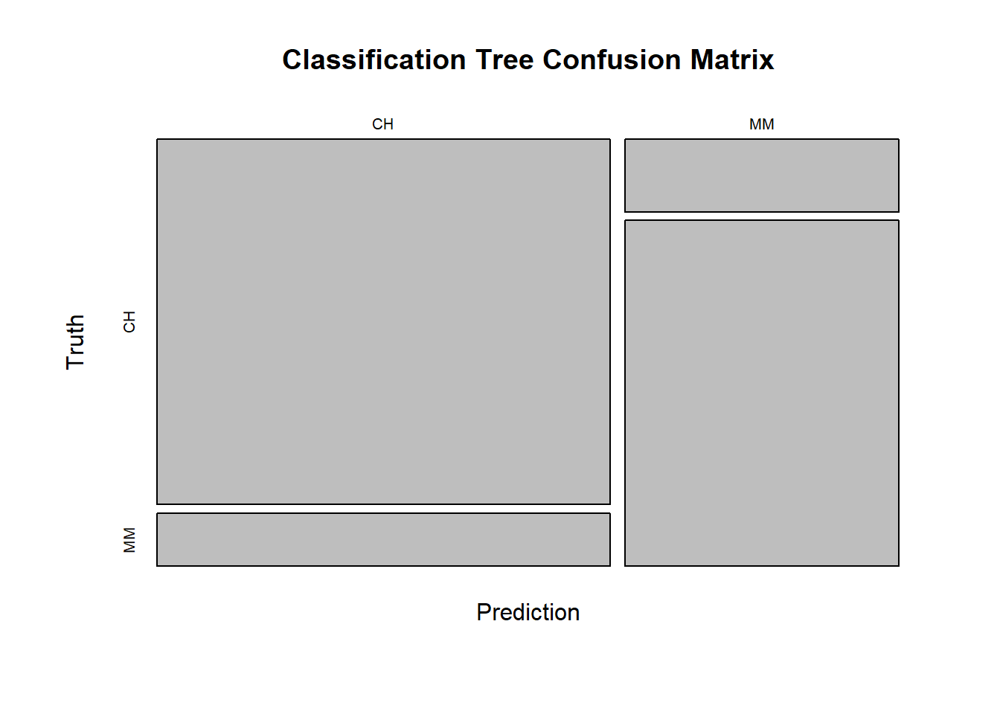
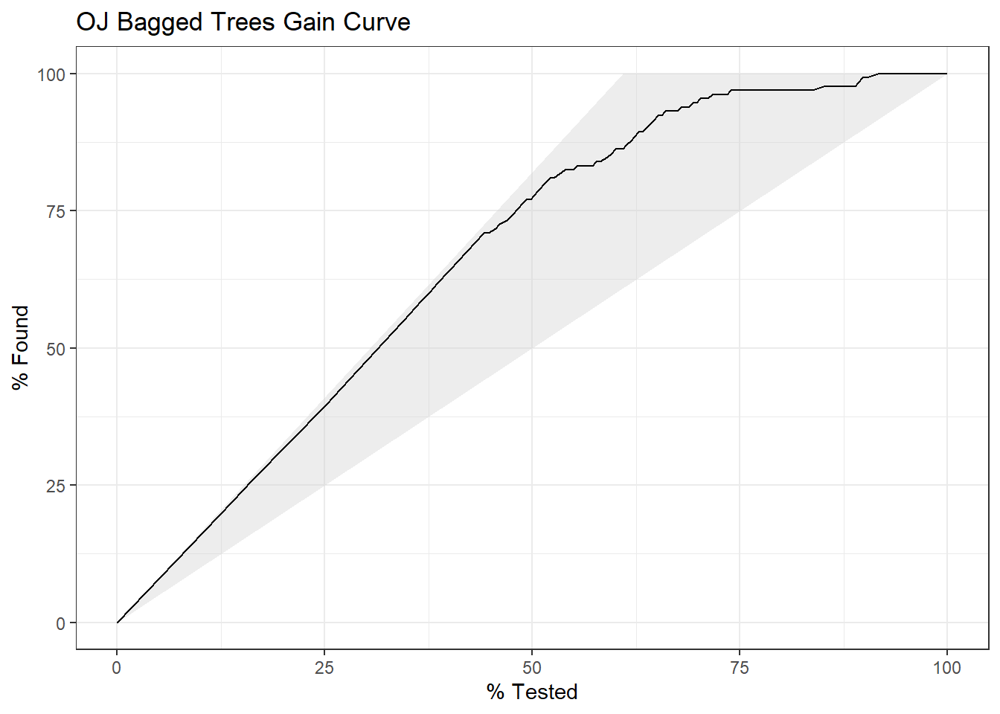

Decision tree models, also known as classification and regression trees (CART), split the dataset into subsets based on the value of input features, creating a tree-like structure of decision rules. At each node, the algorithm chooses the best split. The process continues recursively until a stopping condition is met. The result is a tree that can be used to make predictions for new data points.
CART models define the nodes through a top-down greedy process called recursive binary splitting. Top-down because it begins at the top of the tree with all observations in a single region and successively splits the predictor space; and greedy because at each splitting step, the best split is made at that particular step without consideration to subsequent splits.
The best split is the predictor variable and cut point that minimizes its cost function. For regression trees, that’s the sum of squared residuals. In Equation 6.1, \(A_k\) is node \(k\) of \(K\) nodes.
\(\hat{p}_{kc}\) is the proportion of predictions in node \(k\) that are class \(c\). A completely pure node in a binary tree would have \(\hat{p} \in \{ 0, 1 \}\) for a Gini index of \(G = 0\). A completely impure node would have \(\hat{p} = 0.5\) and \(G = (0.5)(0.5) = 0.25\).1
CART repeats the splitting process for each child node until a stopping criterion is satisfied, usually when no node size surpasses a predefined maximum, or continued splitting does not improve the model significantly. CART may also impose a minimum number of observations in each node.
The resulting tree will over-fit the data and not generalize well, so CART prunes the tree, minimizing the cross-validated prediction error. Rather than cross-validating every possible subtree, CART uses cost-complexity pruning. Cost complexity is the tradeoff between error (cost) and tree size (complexity). The cost complexity of the tree, \(R_{c_p}(T)\), is the sum of its risk (error) plus a cost complexity factor, \(c_p\), multiple of the tree size \(|T|\).
\[R_{c_p}(T) = R(T) + c_p|T| \tag{6.3}\]
\(c_p\) can take any value from \([0..\infty]\), but it turns out there is an optimal tree for ranges of \(c_p\) values, so there is only a finite set of interesting values for \(c_p\)(James et al. 2013; Therneau and Atkinson 2019; and Kuhn and Johnson 2016). A parametric algorithm identifies the interesting \(c_p\) values and their associated pruned trees, \(T_{c_p}\).
6.1 Case Studies
The sections in this chapter work through two case studies. The first fits classification trees to the ISLR::OJ dataset to predict which of two brands of orange juice customers Purchase. The second fits regression trees to the ISLR::Carseats dataset to predict Sales.
Function parsnip::decision_tree() defines a decision tree model. Its default engine is rpart and has three hyperparameters.
tree_depth: maximum number of layers. Larger depths result in more complex models, but they are also more prone to overfitting.
min_n: minimal node size required for splitting.
cost_complexity: a penalty for adding more nodes to the tree. This is another control regulating the tree complexity.
The hyperparameters can either take assigned values, or you can tune them with tune(). We’ll predict Purchase [CH, MM] as a function of all 17 predictors.
Tune the hyperparameters with 10-fold CV using a regular grid. With 3 hyperparameters and 5 levels, the grid has 5^3=125 combinations. That means the tuning step fits 125 models for each of the 10 folds (1,250 fits). We’ll evaluate the fits based on accuracy and AUC. The dataset is somewhat imbalanced (61% “CH”), so AUC is the more important metric. This step takes about a minute to complete.
Each row contains a metrics list with values for each hyperparameter combination and performance metric. There were 125 parameter combinations and two metrics, so 250 rows. Here’s the metrics object from the first fold.
collect_metrics() unnests the metrics column and averages the values over the folds. show_best() shows the best model hyperparameter combination, but the mean AUC is the same for several combinations. The best performing tree is 8 layers deep.
Select the hyperparameter combination with the highest AUC and finalize the workflow. last_fit() fits the model with the full training set and evaluates it on the testing data.
Here is the tree. The output starts with the root node. Terminal nodes are labeled with an asterisk (*), so this is just a summary node of everything beneath. Node 1 Contains all 855 observations with 333 misclassifications. The majority class is CH, with a proportion of 0.6105 for CH and 0.3895 for MM. Node 2 Splits on LoyalCH >= 0.48285, containing 534 observations with 92 misclassifications. The majority class is CH, with a higher proportion of CH. The child nodes of node “x” having labeling pattern 2x) and 2x+1), so for node 1) it’s 2) and 3), and for 2) it’s 4) and 5).
A diagram of the tree can sometimes help if its not too large. The node label indicates the predicted value, error rate, and proportion of observations included. Below the nodes are the splitting criteria.
A variable’s importance is the sum of the improvement in the overall Gini (or RMSE) measure produced by the nodes in which it appears. From the rpartvignette (page 12),
“An overall measure of variable importance is the sum of the goodness of split measures for each split for which it was the primary variable, plus goodness (adjusted agreement) for all splits in which it was a surrogate.”
LoyalCH was the most important variable, followed by PriceDiff.
SHAP (SHapley Additive exPlanations) values are based on game theory and provide a way to understand how each feature contributes to a prediction. They’re model-agnostic and work for both global and local interpretability. They fairly distribute the “credit” for a prediction among all input features.
SHAP works by computing the marginal contribution of each feature by comparing predictions with and without the feature across all possible feature combinations. This is computationally expensive, so approximations exist. Unlike other feature importance methods, SHAP accounts for feature interactions and local behavior.
Use the full confusion matrix and ROC curve to explore performance.
Confusion Matrix
The confusion matrix calculates the model performance on the testing dataset.
oj_cart_cm <- oj_cart_fit |>collect_predictions() |>conf_mat(truth = Purchase, estimate = .pred_class)plot(oj_cart_cm$table, main ="Classification Tree Confusion Matrix")

Several measures come directly from the confusion matrix. The first value (CH) is considered a “positive” (P) result and the second (MM) “negative” (N). The metrics are usually expressed in terms of true and false positives and negatives (TP, FP, TN, FN).
Accuracy is a natural starting point in cases like this where you aren’t more concerned about identifying one outcome more than the other. However, be cautious when the dataset is imbalanced. The model accuracy was 0.856, but you could have achieved 0.623 just by predicting “CH” every time.
When the prevalence is not ~50%, use Cohen’s Kappa. It compares the model accuracy to the accuracy of a random system. \(\kappa = \frac{\text{Acc} - RA}{1-RA}\) where \(RA = \frac{\text{AN} \cdot \text{PN} + \text{AP} \cdot \text{PP}}{\text{Tot}^2}\) is the hypothetical probability of a chance agreement.
If you want to minimize false alarms, e.g., in a spam detector, maximize precision.
Medical testing should balance catching positives (maximize sensitivity/recall) and false alarms (maximize precision). The F1 score gives you that balance.
If there is a presumption of a negative outcome, like in criminal trial, where false positives are more costly than false negatives, maximize specificity.
Cohen’s kappa was rather involved. Here is its calculation.
If you use a metric that is a simple proportion, you can bound it with a 95% CI using the binomial test. For example, the accuracy was 184/215=.856. You can use these values in binom.test(). You might add a benchmark probability for comparison. The NIR (no information rate) statistic is the class rate for the larger class. It is the accuracy you would achieve by just guessing the more common outcome every time. Here, CH is the larger class, so NIR = 131/215 = 0.609. Comparing the accuracy to the NIR, this model is certainly superior to a naive guess.
Show the code
nir <-sum(oj_cart_cm$table[, 1]) /sum(oj_cart_cm$table)binom.test(x = true_preds, n = total_preds, p = nir, alternative ="greater")
Exact binomial test
data: true_preds and total_preds
number of successes = 184, number of trials = 215, p-value = 1.947e-15
alternative hypothesis: true probability of success is greater than 0.6093023
95 percent confidence interval:
0.8104028 1.0000000
sample estimates:
probability of success
0.855814
ROC Curve
The ROC (receiver operating characteristics) curve (Fawcett 2005) is another way to measure model performance. The ROC curve is a plot of the true positive rate (TPR, sensitivity) versus the false positive rate (FPR, 1 - specificity) for a set of thresholds. By default, the threshold for predicting the default classification is 0.50, but it could be any threshold. yardstick::roc_curve calculates the ROC curve and roc_auc() calculates the area under the curve. Generally, you are looking for a curve the at hugs the upper left corner of the grid. If you are looking for a balance between true- and false positives, you might use the plot to identify a probability threshold different from .5.
A few points on the ROC space are helpful for understanding how to use it.
The upper right point (1, 1) is the result of always predicting “positive” (CH). You identify all the positives (sensitivity = 1), but miss all the negatives (specificity = 0).
The lower left point (0, 0) is the opposite, the result of always predicting “negative” (MM).
The upper left point (0, 1) is perfect accuracy.
The lower right point (1, 0) is perfect imbecility, the wrong prediction every time.
The 45 degree diagonal is the result of randomly guessing positive (CH) X percent of the time.
The goal is for all nodes to bunch up in the upper left. Points to the left of the diagonal with a low TPR can be thought of as “conservative” predictors - they only make positive (CH) predictions with strong evidence. Points to the left of the diagonal with a high TPR can be thought of as “liberal” predictors - they make positive (CH) predictions with weak evidence. A single value to characterize the ROC curve is the area under the curve. It can range from 0 - 1.
The gain curve plots the cumulative summed true outcome versus the fraction of items seen when sorted by the predicted value. The “wizard” curve is the gain curve when the data is sorted by the true outcome. If the model’s gain curve is close to the wizard curve, then the model predicted the response variable well. The gray area is the “gain” over a random prediction.
131 of the 215 consumers in the holdout testing set purchased CH.
The gain curve encountered 79 CH purchasers (60.3%) within the first 82 observations (38.1%).
It encountered all 131 CH purchasers on the 140th observation (100%).
The bottom of the gray area is the outcome of a random model. Only half the CH purchasers would be observed within 50% of the observations. The top of the gray area is the outcome of the perfect model, the “wizard curve”. Half the CH purchasers would be observed in ~30% of the observations.
6.3 Regression Tree
A simple regression tree is built in a manner similar to a simple classification tree, and like the simple classification tree, it is rarely invoked on its own; the bagged, random forest, and gradient boosting methods build on this logic.
The first step is to build a full tree, then perform k-fold cross-validation to help select the optimal cost complexity (cp). The only difference here is the set_Mode("regression") call to produce a regression tree.
Show the code
cs_cart <-list()# `decision_tree` has 3 hyperparameters (`cost_complexity`, `tree_depth`, and# `min_n`). Set their value to `tune()` if you want to optimize any one. Let's# optimize just `cost_complexity` and `tree_depth`.cs_cart$model <-decision_tree(cost_complexity =tune(),tree_depth =tune() ) %>%set_engine("rpart") %>%set_mode("regression")# Tune a model using the workflow framework.cs_cart$workflow <-workflow() %>%add_model(cs_cart$model) %>%add_formula(Sales ~ .)# Tune the model with 10-fold CV using a regular grid of cost complexity values.# With 2 hyperparameters and 5 levels, the grid has 5^2=25 combinations. That# means the tuning exercise will fit 25 models to each of 10 folds = 250 fits.cs_cart$tune_grid <- cs_cart$workflow %>%tune_grid(resamples =vfold_cv(cs_train, v =10), grid =grid_regular(cost_complexity(), tree_depth(), levels =5) )# `collect_metrics()` returns two metrics: rmse and rsq.cs_cart$tune_grid %>%collect_metrics() %>%mutate(tree_depth =factor(tree_depth)) %>%ggplot(aes(x = cost_complexity, y = mean, color = tree_depth)) +geom_line(linewidth =1.5, alpha = .6) +facet_wrap(facets =vars(.metric), scales ="free") +scale_x_log10()
The best models in terms of RMSE was the tree depth of 8 and any cp < 5.6E-04.
Show the code
cs_cart$tune %>%show_best(metric ="rmse")
# A tibble: 5 × 8
cost_complexity tree_depth .metric .estimator mean n std_err .config
<dbl> <int> <chr> <chr> <dbl> <int> <dbl> <chr>
1 0.0000000001 8 rmse standard 2.02 10 0.0731 Preprocesso…
2 0.0000000178 8 rmse standard 2.02 10 0.0731 Preprocesso…
3 0.00000316 8 rmse standard 2.02 10 0.0731 Preprocesso…
4 0.000562 8 rmse standard 2.02 10 0.0731 Preprocesso…
5 0.0000000001 11 rmse standard 2.02 10 0.0731 Preprocesso…
Select the best model in terms of rmse and finalize the model.
Show the code
cs_cart$best_tune <-select_best(cs_cart$tune_grid, metric ="rmse")# `finalize_workflow()` applies the tuning parameters to the workflow.cs_cart$final_workflow <-finalize_workflow(cs_cart$workflow, cs_cart$best_tune)# last_fit() fits the model with the full training set and evaluates it on the # testing data.cs_cart$fit <- cs_cart$final_workflow %>%last_fit(cs_split)
Here is the tree. The output starts with the root node. The predicted sales at the root is the mean sales in the testing data set is 7.47 (values are $000s). The deviance at the root is the SSE, 2,412. The first split is at ShelveLoc = [Bad, Medium] vs Good.
Here is a diagram of the tree. The node label indicates the predicted value (mean) and the proportion of observations that are in the node (or child nodes). Below the nodes are the splitting criteria.
collect_metrics() returns the RMSE, \(RMSE = \sqrt{(1/2) \sum{(actual - pred)^2}})\) and the model \(R^2\). The RMSE of 2.14 in the test data set is pretty good considering the standard deviation of Sales is 3.10.
Show the code
cs_cart$fit %>%collect_metrics()
# A tibble: 2 × 4
.metric .estimator .estimate .config
<chr> <chr> <dbl> <chr>
1 rmse standard 2.14 pre0_mod0_post0
2 rsq standard 0.548 pre0_mod0_post0
Here is a predicted vs actual plot.
Show the code
cs_cart$fit %>%collect_predictions() %>%ggplot(aes(x = Sales, y = .pred)) +geom_point(alpha =0.6, color ="cadetblue") +geom_smooth(method ="loess", formula ="y~x") +geom_abline(intercept =0, slope =1, linetype =2) +labs(title ="Carseats CART, Predicted vs Actual")
The tree nodes do a decent job of binning the observations. The predictions vs actuals plot suggests the model over-estimates at the low end and underestimates at the high end. Calculate the test data set RMSE.
6.4 Bagged Trees
One drawback of decision trees is that they are high-variance estimators. A small number of additional training observations can dramatically alter the prediction performance of a learned tree.
Bootstrap aggregation, or bagging, is a general-purpose procedure for reducing the variance of a statistical learning method. The algorithm constructs B regression trees using B bootstrapped training sets, and averages the resulting predictions. These trees are grown deep, and are not pruned. Hence each individual tree has high variance, but low bias. Averaging the B trees reduces the variance. The predicted value for an observation is the mode (classification) or mean (regression) of the trees. B usually equals ~25.
To test the model accuracy, the out-of-bag observations are predicted from the models. For a training set of size n, each tree is composed of \(\sim (1 - e^{-1})n = .632n\) unique observations in-bag and \(.368n\) out-of-bag. For each tree in the ensemble, bagging makes predictions on the tree’s out-of-bag observations. I think (see page 197 of (Kuhn and Johnson 2016)) bagging measures the performance (RMSE, Accuracy, ROC, etc.) of each tree in the ensemble and averages them to produce an overall performance estimate. (This makes no sense to me. If each tree has poor performance, then the average performance of many trees will still be poor. An ensemble of B trees will produce \(\sim .368 B\) predictions per unique observation. Seems like you should take the mean/mode of each observation’s prediction as the final prediction. Then you have n predictions to compare to n actuals, and you assess performance on that.)
The downside to bagging is that there is no single tree with a set of rules to interpret. It becomes unclear which variables are more important than others.
The next section explains how bagged trees are a special case of random forests.
6.4.1 Bagged Classification Tree
Leaning by example, I’ll predict Purchase from the OJ data set again, this time using the bagging with parsnip::bag_tree().
Show the code
oj_bag <-list()# `bag_tree` has 4 hyperparameters (`cost_complexity`, `tree_depth`, and# `min_n`). Set their value to `tune()` if you want to optimize any one. Let's# optimize just `cost_complexity` and `tree_depth`.oj_bag$model <-bag_tree(cost_complexity =tune(),tree_depth =tune() ) %>%set_engine("rpart") %>%set_mode("classification")# Tune a model using the workflow framework.oj_bag$workflow <-workflow() %>%add_model(oj_bag$model) %>%add_formula(Purchase ~ .)# Tune the model with 10-fold CV using a regular grid of cost complexity values.# With 2 hyperparameters and 5 levels, the grid has 5^2=25 combinations. That# means the tuning exercise will fit 25 models to each of 10 folds = 250 fits.oj_bag$tune_grid <- oj_bag$workflow %>%tune_grid(resamples =vfold_cv(oj_train, v =10), grid =grid_regular(cost_complexity(), tree_depth(), levels =5) )# `collect_metrics()` returns two metrics: accuracy and ROC-AUC.oj_bag$tune_grid %>%collect_metrics() %>%mutate(tree_depth =factor(tree_depth)) %>%ggplot(aes(x = cost_complexity, y = mean, color = tree_depth)) +geom_line(linewidth =1.5, alpha = .6) +facet_wrap(facets =vars(.metric), scales ="free") +scale_x_log10()
The best models in terms of accuracy and ROC was the tree depth of 4 and any cp <= 3.16e-06.
Select the best model in terms of accuracy and finalize the model.
Show the code
oj_bag$best_tune <-select_best(oj_bag$tune_grid, metric ="accuracy")# `finalize_workflow()` applies the tuning parameters to the workflow.oj_bag$final_workflow <-finalize_workflow(oj_bag$workflow, oj_bag$best_tune)# last_fit() fits the model with the full training set and evaluates it on the # testing data.oj_bag$fit <- oj_bag$final_workflow %>%last_fit(oj_split)
I think tidymodels started by splitting the training set into 10 folds, then using 9 of the folds to run the bagging algorithm and collect performance measures on the hold-out fold. After repeating the process for all 10 folds, it averaged the performance measures to produce the resampling results shown below. With hyperparameters, the process is repeated for all combinations and the resampling results above are from the best performing combination.
There is no single tree to visualize, and you can’t even produce a VIP. Let’s look at the performance on the holdout data set. collect_metrics() shows the accuracy and ROC AUC metrics. The accuracy is slightly lower than the single tree, but ROC AUC is higher.
You can explore the performance by calculating the full confusion matrix and visualizing the ROC curve. The confusion matrix calculates the model performance predicting on the holdout testing data set.
The ROC curve is a plot of the true positive rate (TPR, sensitivity) versus the false positive rate (FPR, 1 - specificity) for a set of thresholds. The AUC on the holdout set is 0.925.
The gain curve plots the cumulative summed true outcome versus the fraction of items seen when sorted by the predicted value.
Show the code
oj_bag$fit %>%collect_predictions() %>% yardstick::gain_curve(Purchase, .pred_CH) %>%autoplot() +labs(title ="OJ Bagged Trees Gain Curve")

6.4.2 Bagging Regression Tree
I’ll predict Sales from the Carseats data set again, this time with parsnip::bag_tree().
Show the code
library(baguette)cs_bag <-list()# `bag_tree` has 4 hyperparameters (`cost_complexity`, `tree_depth`, and# `min_n`). Set their value to `tune()` if you want to optimize any one. Let's# optimize just `cost_complexity` and `tree_depth`.cs_bag$model <-bag_tree(cost_complexity =tune(),tree_depth =tune() ) %>%set_engine("rpart") %>%set_mode("regression")# Tune a model using the workflow framework.cs_bag$workflow <-workflow() %>%add_model(cs_bag$model) %>%add_formula(Sales ~ .)# Tune the model with 10-fold CV using a regular grid of cost complexity values.# With 2 hyperparameters and 5 levels, the grid has 5^2=25 combinations. That# means the tuning exercise will fit 25 models to each of 10 folds = 250 fits.cs_bag$tune_grid <- cs_bag$workflow %>%tune_grid(resamples =vfold_cv(cs_train, v =10), grid =grid_regular(cost_complexity(), tree_depth(), levels =5) )# `collect_metrics()` returns two metrics: accuracy and ROC-AUC.cs_bag$tune_grid %>%collect_metrics() %>%mutate(tree_depth =factor(tree_depth)) %>%ggplot(aes(x = cost_complexity, y = mean, color = tree_depth)) +geom_line(linewidth =1.5, alpha = .6) +facet_wrap(facets =vars(.metric), scales ="free") +scale_x_log10()
The best models in terms of RMSE was the tree depth of 8 and any cp < 5.6E-04.
Show the code
cs_bag$tune %>%show_best(metric ="rmse")
# A tibble: 5 × 8
cost_complexity tree_depth .metric .estimator mean n std_err .config
<dbl> <int> <chr> <chr> <dbl> <int> <dbl> <chr>
1 0.000562 11 rmse standard 1.58 10 0.0416 Preprocesso…
2 0.0000000178 15 rmse standard 1.58 10 0.0585 Preprocesso…
3 0.000562 15 rmse standard 1.59 10 0.0639 Preprocesso…
4 0.0000000001 11 rmse standard 1.60 10 0.0652 Preprocesso…
5 0.00000316 8 rmse standard 1.63 10 0.0618 Preprocesso…
Select the best model in terms of rmse and finalize the model.
Show the code
cs_bag$best_tune <-select_best(cs_bag$tune_grid, metric ="rmse")# `finalize_workflow()` applies the tuning parameters to the workflow.cs_bag$final_workflow <-finalize_workflow(cs_bag$workflow, cs_bag$best_tune)# last_fit() fits the model with the full training set and evaluates it on the # testing data.cs_bag$fit <- cs_bag$final_workflow %>%last_fit(cs_split)
collect_metrics() returns the RMSE, \(RMSE = \sqrt{(1/2) \sum{(actual - pred)^2}})\) and the model \(R^2\). The RMSE of cs_bag$fit %>% collect_metrics() %>% filter(.metric == "rmse") %>% pull(.estimate) %>% comma(.01) in the test data set is pretty good considering the standard deviation of Sales is comma(sd(cs_test$Sales), .01).
Show the code
cs_bag$fit %>%collect_metrics()
# A tibble: 2 × 4
.metric .estimator .estimate .config
<chr> <chr> <dbl> <chr>
1 rmse standard 1.65 pre0_mod0_post0
2 rsq standard 0.738 pre0_mod0_post0
Here is a predicted vs actual plot.
Show the code
cs_bag$fit %>%collect_predictions() %>%ggplot(aes(x = Sales, y = .pred)) +geom_point(alpha =0.6, color ="cadetblue") +geom_smooth(method ="loess", formula ="y~x") +geom_abline(intercept =0, slope =1, linetype =2) +labs(title ="Carseats Bagged Trees, Predicted vs Actual")
6.5 Random Forests
Random forests improve bagged trees by way of a small tweak that de-correlates the trees. As in bagging, the algorithm builds a number of decision trees on bootstrapped training samples. But when building these decision trees, each time a split in a tree is considered, a random sample of mtry predictors is chosen as split candidates from the full set of p predictors. A fresh sample of mtry predictors is taken at each split. Typically \(mtry \sim \sqrt{p}\). Bagged trees are thus a special case of random forests where mtry = p.
6.5.0.1 Random Forest Classification Tree
Leaning by example, I’ll predict Purchase from the OJ data set again, this time using the bagging with parsnip::rand_forest().
Show the code
oj_rf <-list()# `rand_forest` has 3 hyperparameters (`mtry`, `trees`, and# `min_n`). Set their value to `tune()` if you want to optimize any one. Let's# optimize just `trees` and `min_n`.oj_rf$model <-rand_forest(trees =tune(),min_n =tune() ) %>%set_engine("ranger") %>%set_mode("classification")# Tune a model using the workflow framework.oj_rf$workflow <-workflow() %>%add_model(oj_rf$model) %>%add_formula(Purchase ~ .)# Tune the model with 10-fold CV using a regular grid of cost complexity values.# With 2 hyperparameters and 5 levels, the grid has 5^2=25 combinations. That# means the tuning exercise will fit 25 models to each of 10 folds = 250 fits.oj_rf$tune_grid <- oj_rf$workflow %>%tune_grid(resamples =vfold_cv(oj_train, v =10), grid =grid_regular(trees(), min_n(), levels =5) )# `collect_metrics()` returns two metrics: accuracy and ROC-AUC.oj_rf$tune_grid %>%collect_metrics() %>%mutate(trees =factor(trees)) %>%ggplot(aes(x = min_n, y = mean, color = trees)) +geom_line(linewidth =1.5, alpha = .6) +facet_wrap(facets =vars(.metric), scales ="free") +scale_x_log10()
The best models in terms of accuracy and ROC was the trees of 1000 and any minimum node size of 40.
Select the best model in terms of accuracy and finalize the model.
Show the code
oj_rf$best_tune <-select_best(oj_rf$tune_grid, metric ="accuracy")# `finalize_workflow()` applies the tuning parameters to the workflow.oj_rf$final_workflow <-finalize_workflow(oj_rf$workflow, oj_rf$best_tune)# last_fit() fits the model with the full training set and evaluates it on the # testing data.oj_rf$fit <- oj_rf$final_workflow %>%last_fit(oj_split)
There is no single tree to visualize, and you can’t even produce a VIP. Let’s look at the performance on the holdout data set. collect_metrics() shows the accuracy and ROC AUC metrics. The accuracy is slightly lower than the single tree, but ROC AUC is higher than both the single tree and bagged trees.
You can explore the performance by calculating the full confusion matrix and visualizing the ROC curve. The confusion matrix calculates the model performance predicting on the holdout testing data set.
The ROC curve is a plot of the true positive rate (TPR, sensitivity) versus the false positive rate (FPR, 1 - specificity) for a set of thresholds. The AUC on the holdout set is 0.935.
The gain curve plots the cumulative summed true outcome versus the fraction of items seen when sorted by the predicted value.
Show the code
oj_rf$fit %>%collect_predictions() %>% yardstick::gain_curve(Purchase, .pred_CH) %>%autoplot() +labs(title ="OJ Random Forest Gain Curve")
6.5.0.2 Random Forest Regression Tree
I’ll predict Sales from the Carseats data set again, this time with parsnip::rand_forest().
Show the code
cs_rf <-list()# `rand_forest` has 3 hyperparameters (`mtry`, `trees`, and# `min_n`). Set their value to `tune()` if you want to optimize any one. Let's# optimize just `trees` and `min_n`.cs_rf$model <-rand_forest(trees =tune(),min_n =tune() ) %>%set_engine("ranger") %>%set_mode("regression")# Tune a model using the workflow framework.cs_rf$workflow <-workflow() %>%add_model(cs_rf$model) %>%add_formula(Sales ~ .)# Tune the model with 10-fold CV using a regular grid of cost complexity values.# With 2 hyperparameters and 5 levels, the grid has 5^2=25 combinations. That# means the tuning exercise will fit 25 models to each of 10 folds = 250 fits.cs_rf$tune_grid <- cs_rf$workflow %>%tune_grid(resamples =vfold_cv(cs_train, v =10), grid =grid_regular(trees(), min_n(), levels =5) )# `collect_metrics()` returns two metrics: accuracy and ROC-AUC.cs_rf$tune_grid %>%collect_metrics() %>%mutate(trees =factor(trees)) %>%ggplot(aes(x = min_n, y = mean, color = trees)) +geom_line(linewidth =1.5, alpha = .6) +facet_wrap(facets =vars(.metric), scales ="free") +scale_x_log10()
The best models in terms of RMSE was 2000 tree with at least 2 data points per node.
Show the code
cs_rf$tune %>%show_best(metric ="rmse")
# A tibble: 5 × 8
trees min_n .metric .estimator mean n std_err .config
<int> <int> <chr> <chr> <dbl> <int> <dbl> <chr>
1 1000 2 rmse standard 1.72 10 0.0707 Preprocessor1_Model03
2 500 2 rmse standard 1.73 10 0.0724 Preprocessor1_Model02
3 1500 2 rmse standard 1.73 10 0.0696 Preprocessor1_Model04
4 2000 2 rmse standard 1.73 10 0.0687 Preprocessor1_Model05
5 1500 11 rmse standard 1.77 10 0.0681 Preprocessor1_Model09
Select the best model in terms of rmse and finalize the model.
Show the code
cs_rf$best_tune <-select_best(cs_rf$tune_grid, metric ="rmse")# `finalize_workflow()` applies the tuning parameters to the workflow.cs_rf$final_workflow <-finalize_workflow(cs_rf$workflow, cs_rf$best_tune)# last_fit() fits the model with the full training set and evaluates it on the # testing data.cs_rf$fit <- cs_rf$final_workflow %>%last_fit(cs_split)
collect_metrics() returns the RMSE, \(RMSE = \sqrt{(1/2) \sum{(actual - pred)^2}})\) and the model \(R^2\). The RMSE of 1.90 in the test data set is pretty good considering the standard deviation of Sales is 3.10.
Show the code
cs_rf$fit %>%collect_metrics()
# A tibble: 2 × 4
.metric .estimator .estimate .config
<chr> <chr> <dbl> <chr>
1 rmse standard 1.90 pre0_mod0_post0
2 rsq standard 0.732 pre0_mod0_post0
Here is a predicted vs actual plot.
Show the code
cs_rf$fit %>%collect_predictions() %>%ggplot(aes(x = Sales, y = .pred)) +geom_point(alpha =0.6, color ="cadetblue") +geom_smooth(method ="loess", formula ="y~x") +geom_abline(intercept =0, slope =1, linetype =2) +labs(title ="Carseats Random Forest, Predicted vs Actual")
6.6 Gradient Boosting
Note: I learned gradient boosting from explained.ai.
Gradient boosting machine (GBM) is an additive modeling algorithm that gradually builds a composite model by iteratively adding M weak sub-models based on the performance of the prior iteration’s composite,
\[F_M(x) = \sum_m^M f_m(x).\]
The idea is to fit a weak model, then replace the response values with the residuals from that model, and fit another model. Adding the residual prediction model to the original response prediction model produces a more accurate model. GBM repeats this process over and over, running new models to predict the residuals of the previous composite models, and adding the results to produce new composites. With each iteration, the model becomes stronger and stronger. The successive trees are usually weighted to slow down the learning rate. “Shrinkage” reduces the influence of each individual tree and leaves space for future trees to improve the model.
\[F_M(x) = f_0 + \eta\sum_{m = 1}^M f_m(x).\]
The smaller the learning rate, \(\eta\), the larger the number of trees, \(M\). \(\eta\) and \(M\) are hyperparameters. Other constraints to the trees are usually applied as additional hyperparameters, including, tree depth, number of nodes, minimum observations per split, and minimum improvement to loss.
The name “gradient boosting” refers to the boosting of a model with a gradient. Each round of training builds a weak learner and uses the residuals to calculate a gradient, the partial derivative of the loss function. Gradient boosting “descends the gradient” to adjust the model parameters to reduce the error in the next round of training.
In the case of classification problems, the loss function is the log-loss; for regression problems, the loss function is mean squared error. GBM continues until it reaches maximum number of trees or an acceptable error level.
6.6.0.1 Gradient Boosting Classification Tree
Leaning by example, I’ll predict Purchase from the OJ data set again, this time using the bagging with parsnip::boost_tree()
Show the code
oj_xgb <-list()# `boost_tree` has 8 hyperparameters. Let's optimize just `trees` and `min_n`.oj_xgb$model <-boost_tree(trees =tune(),min_n =tune() ) %>%set_engine("xgboost") %>%set_mode("classification")# Tune a model using the workflow framework.oj_xgb$workflow <-workflow() %>%add_model(oj_xgb$model) %>%add_formula(Purchase ~ .)# Tune the model with 10-fold CV using a regular grid of cost complexity values.# With 2 hyperparameters and 5 levels, the grid has 5^2=25 combinations. That# means the tuning exercise will fit 25 models to each of 10 folds = 250 fits.oj_xgb$tune_grid <- oj_xgb$workflow %>%tune_grid(resamples =vfold_cv(oj_train, v =10), grid =grid_regular(trees(), min_n(), levels =5) )# `collect_metrics()` returns two metrics: accuracy and ROC-AUC.oj_xgb$tune_grid %>%collect_metrics() %>%mutate(trees =factor(trees)) %>%ggplot(aes(x = min_n, y = mean, color = trees)) +geom_line(linewidth =1.5, alpha = .6) +facet_wrap(facets =vars(.metric), scales ="free") +scale_x_log10()
The best models in terms of accuracy and ROC was the trees of 1000 and any minimum node size of 40.
Select the best model in terms of accuracy and finalize the model.
Show the code
oj_xgb$best_tune <-select_best(oj_xgb$tune_grid, metric ="accuracy")# `finalize_workflow()` applies the tuning parameters to the workflow.oj_xgb$final_workflow <-finalize_workflow(oj_xgb$workflow, oj_xgb$best_tune)# last_fit() fits the model with the full training set and evaluates it on the # testing data.oj_xgb$fit <- oj_xgb$final_workflow %>%last_fit(oj_split)
There is no single tree to visualize, and you can’t even produce a VIP. Let’s look at the performance on the holdout data set. collect_metrics() shows the accuracy and ROC AUC metrics.
You can explore the performance by calculating the full confusion matrix and visualizing the ROC curve. The confusion matrix calculates the model performance predicting on the holdout testing data set.
The ROC curve is a plot of the true positive rate (TPR, sensitivity) versus the false positive rate (FPR, 1 - specificity) for a set of thresholds. The AUC on the holdout set is 0.932.
I’ll predict Sales from the Carseats data set again, this time with parsnip::rand_forest().
Show the code
cs_xgb <-list()# `rand_forest` has 3 hyperparameters (`mtry`, `trees`, and# `min_n`). Set their value to `tune()` if you want to optimize any one. Let's# optimize just `trees` and `min_n`.cs_xgb$model <-boost_tree(trees =tune(),min_n =tune() ) %>%set_engine("xgboost") %>%set_mode("regression")# Tune a model using the workflow framework.cs_xgb$workflow <-workflow() %>%add_model(cs_xgb$model) %>%add_formula(Sales ~ .)# Tune the model with 10-fold CV using a regular grid of cost complexity values.# With 2 hyperparameters and 5 levels, the grid has 5^2=25 combinations. That# means the tuning exercise will fit 25 models to each of 10 folds = 250 fits.cs_xgb$tune_grid <- cs_xgb$workflow %>%tune_grid(resamples =vfold_cv(cs_train, v =10), grid =grid_regular(trees(), min_n(), levels =5) )# `collect_metrics()` returns two metrics: accuracy and ROC-AUC.cs_xgb$tune_grid %>%collect_metrics() %>%mutate(trees =factor(trees)) %>%ggplot(aes(x = min_n, y = mean, color = trees)) +geom_line(linewidth =1.5, alpha = .6) +facet_wrap(facets =vars(.metric), scales ="free") +scale_x_log10()
The best models in terms of RMSE was 500 trees with at least 21 data points per node.
Show the code
cs_xgb$tune %>%show_best(metric ="rmse")
# A tibble: 5 × 8
trees min_n .metric .estimator mean n std_err .config
<int> <int> <chr> <chr> <dbl> <int> <dbl> <chr>
1 500 11 rmse standard 1.36 10 0.0674 Preprocessor1_Model07
2 1000 11 rmse standard 1.36 10 0.0674 Preprocessor1_Model08
3 1500 11 rmse standard 1.36 10 0.0674 Preprocessor1_Model09
4 2000 11 rmse standard 1.36 10 0.0674 Preprocessor1_Model10
5 500 40 rmse standard 1.38 10 0.0759 Preprocessor1_Model22
Select the best model in terms of rmse and finalize the model.
Show the code
cs_xgb$best_tune <-select_best(cs_xgb$tune_grid, metric ="rmse")# `finalize_workflow()` applies the tuning parameters to the workflow.cs_xgb$final_workflow <-finalize_workflow(cs_xgb$workflow, cs_xgb$best_tune)# last_fit() fits the model with the full training set and evaluates it on the # testing data.cs_xgb$fit <- cs_rf$final_workflow %>%last_fit(cs_split)
collect_metrics() returns the RMSE, \(RMSE = \sqrt{(1/2) \sum{(actual - pred)^2}})\) and the model \(R^2\). The RMSE of 1.89 in the test data set is pretty good considering the standard deviation of Sales is 3.10.
Show the code
cs_xgb$fit %>%collect_metrics()
# A tibble: 2 × 4
.metric .estimator .estimate .config
<chr> <chr> <dbl> <chr>
1 rmse standard 1.89 pre0_mod0_post0
2 rsq standard 0.740 pre0_mod0_post0
Here is a predicted vs actual plot.
Show the code
cs_xgb$fit %>%collect_predictions() %>%ggplot(aes(x = Sales, y = .pred)) +geom_point(alpha =0.6, color ="cadetblue") +geom_smooth(method ="loess", formula ="y~x") +geom_abline(intercept =0, slope =1, linetype =2) +labs(title ="Carseats Random Forest, Predicted vs Actual")
You might come across a variation of the Gini index called entropy, the information statistic, \(D = - \sum_{c=1}^C{\hat{p}_{kc} \log \hat{p}_{kc}}\). Whereas Gini can range from 0 to .25, entropy ranges from 0 to \(-(.5 \log(.5)) \cdot 2 = 0.69\).↩︎
Source Code
# Decision Trees```{r include=FALSE}library(tidyverse)library(tidymodels)library(tictoc)library(rpart.plot) # better formatted plots than the ones in rpartlibrary(baguette)library(ggiraph)library(glue)tidymodels_prefer()theme_set( theme_light() + theme( plot.caption = element_text(hjust = 0), strip.background = element_rect(fill = "gray90", color = "gray60"), strip.text = element_text(color = "gray20") ))```Decision tree models, also known as classification and regression trees (CART), split the dataset into subsets based on the value of input features, creating a tree-like structure of decision rules. At each node, the algorithm chooses the best split. The process continues recursively until a stopping condition is met. The result is a tree that can be used to make predictions for new data points.CART models define the nodes through a *top-down greedy* process called *recursive binary splitting*. *Top-down* because it begins at the top of the tree with all observations in a single region and successively splits the predictor space; and *greedy* because at each splitting step, the best split is made at that particular step without consideration to subsequent splits.The best split is the predictor variable and cut point that minimizes its cost function. For regression trees, that's the sum of squared residuals. In @eq-06-rss, $A_k$ is node $k$ of $K$ nodes.$$RSS = \sum_{k=1}^K\sum_{i \in A_k}{\left(y_i - \hat{y}_{A_k} \right)^2}.$$ {#eq-06-rss}For classification trees, it's the Gini index,$$G = \sum_{c=1}^C{\hat{p}_{kc}(1 - \hat{p}_{kc})},$$ {#eq-06-gini}$\hat{p}_{kc}$ is the proportion of predictions in node $k$ that are class $c$. A completely *pure* node in a binary tree would have $\hat{p} \in \{ 0, 1 \}$ for a Gini index of $G = 0$. A completely *impure* node would have $\hat{p} = 0.5$ and $G = (0.5)(0.5) = 0.25$.[^fn-06-entropy][^fn-06-entropy]: You might come across a variation of the Gini index called entropy, the *information statistic*, $D = - \sum_{c=1}^C{\hat{p}_{kc} \log \hat{p}_{kc}}$. Whereas Gini can range from 0 to .25, entropy ranges from 0 to $-(.5 \log(.5)) \cdot 2 = 0.69$.CART repeats the splitting process for each child node until a *stopping criterion* is satisfied, usually when no node size surpasses a predefined maximum, or continued splitting does not improve the model significantly. CART may also impose a minimum number of observations in each node.The resulting tree will over-fit the data and not generalize well, so CART *prunes* the tree, minimizing the cross-validated prediction error. Rather than cross-validating every possible subtree, CART uses *cost-complexity pruning*. Cost complexity is the tradeoff between error (cost) and tree size (complexity). The cost complexity of the tree, $R_{c_p}(T)$, is the sum of its risk (error) plus a cost complexity factor, $c_p$, multiple of the tree size $|T|$.$$R_{c_p}(T) = R(T) + c_p|T|$$ {#eq-06-cp}$c_p$ can take any value from $[0..\infty]$, but it turns out there is an optimal tree for ranges of $c_p$ values, so there is only a finite set of interesting values for $c_p$ [@James2013; @Therneau2019; and @Kuhn2016]. A parametric algorithm identifies the interesting $c_p$ values and their associated pruned trees, $T_{c_p}$.## Case StudiesThe sections in this chapter work through two case studies. The first fits classification trees to the `ISLR::OJ` dataset to predict which of two brands of orange juice customers `Purchase`. The second fits regression trees to the `ISLR::Carseats` dataset to predict `Sales`.```{r}#| code-fold: falseoj_dat <- ISLR::OJglimpse(oj_dat)cs_dat <- ISLR::Carseatsglimpse(cs_dat)```Partition the data into training and testing datasets. We'll fit models to the training data and compare their performance using testing data.```{r collapse=TRUE}#| code-fold: falseset.seed(12345)(oj_split <- initial_split(oj_dat, prop = 0.8, strata = Purchase))oj_train <- training(oj_split)oj_test <- testing(oj_split)(cs_split <- initial_split(cs_dat, prop = 0.8, strata = Sales))cs_train <- training(cs_split)cs_test <- testing(cs_split)```## Classification TreeFunction `parsnip::decision_tree()` defines a decision tree model. Its default engine is `rpart` and has three hyperparameters.- `tree_depth`: maximum number of layers. Larger depths result in more complex models, but they are also more prone to overfitting.- `min_n`: minimal node size required for splitting.- `cost_complexity`: a penalty for adding more nodes to the tree. This is another control regulating the tree complexity.The hyperparameters can either take assigned values, or you can tune them with `tune()`. We'll predict `Purchase`[CH, MM] as a function of all 17 predictors.```{r}#| code-fold: falseoj_cart_mdl <-decision_tree(cost_complexity =tune(),tree_depth =tune(),min_n =tune() ) %>%set_engine("rpart") |>set_mode("classification")oj_cart_wf <-workflow() |>add_model(oj_cart_mdl) |>add_formula(Purchase ~ .)```### Fit the Model {.unnumbered}Tune the hyperparameters with 10-fold CV using a regular grid. With 3 hyperparameters and 5 levels, the grid has 5\^3=125 combinations. That means the tuning step fits 125 models for each of the 10 folds (1,250 fits). We'll evaluate the fits based on accuracy and AUC. The dataset is somewhat imbalanced (`r percent(mean(oj_dat$Purchase == "CH"), 1)` "CH"), so AUC is the more important metric. This step takes about a minute to complete.```{r}#| label: fit-cart-class#| cache: true#| code-fold: falsetic()oj_cart_resamples <- oj_cart_wf |>tune_grid(resamples =vfold_cv(oj_train, v =10), grid =grid_regular(cost_complexity(), tree_depth(), min_n(), levels =5 ),metrics =metric_set(roc_auc, accuracy) )toc()````tune_grid()` returns a `resamples` object with one row per fold. ```{r}#| code-fold: falseoj_cart_resamples```Each row contains a metrics list with values for each hyperparameter combination and performance metric. There were 125 parameter combinations and two metrics, so 250 rows. Here's the metrics object from the first fold.```{r}#| code-fold: falseoj_cart_resamples[1, ]$.metrics[[1]] |>glimpse()````collect_metrics()` unnests the `metrics` column and averages the values over the folds. `show_best()` shows the best model hyperparameter combination, but the mean AUC is the same for several combinations. The best performing tree is 8 layers deep.```{r}#| code-fold: falseshow_best(oj_cart_resamples, metric ="roc_auc") |> knitr::kable()```Plot the sensitivity to the hyperparameter combinations to make sure you've explored a range that gives you a peek.```{r}#| code-fold: truedf <-collect_metrics(oj_cart_resamples)bind_rows(cost_complextity = df |>rename(x = cost_complexity) |>summarize(.by =c(x, .metric), mean_auc =mean(mean)),tree_depth = df |>rename(x = tree_depth) |>summarize(.by =c(x, .metric), mean_auc =mean(mean)),min_n = df |>rename(x = min_n) |>summarize(.by =c(x, .metric), mean_auc =mean(mean)),.id ="hyperparameter") |>ggplot(aes(x = x, y = mean_auc, color = .metric)) +geom_line(linewidth =1.5, alpha = .6) +facet_wrap(vars(hyperparameter), scales ="free_x") +labs(x =NULL, y ="Mean", color =NULL, title ="Hyperparameter Tuning") +theme(legend.position ="top")```Select the hyperparameter combination with the highest AUC and finalize the workflow. `last_fit()` fits the model with the full training set and evaluates it on the testing data.```{r}oj_cart_hyperparameters <-select_best(oj_cart_resamples, metric ="roc_auc")oj_cart_fit <-finalize_workflow(oj_cart_wf, oj_cart_hyperparameters) |>last_fit(oj_split)```### Interpretation {.unnumbered}Here is the tree. The output starts with the root node. Terminal nodes are labeled with an asterisk (\*), so this is just a summary node of everything beneath. Node 1 Contains all 855 observations with 333 misclassifications. The majority class is CH, with a proportion of 0.6105 for CH and 0.3895 for MM. Node 2 Splits on `LoyalCH` >= 0.48285, containing 534 observations with 92 misclassifications. The majority class is CH, with a higher proportion of CH. The child nodes of node "x" having labeling pattern 2x) and 2x+1), so for node 1) it's 2) and 3), and for 2) it's 4) and 5).```{r}#| code-fold: falseextract_workflow(oj_cart_fit)```A diagram of the tree can sometimes help if its not too large. The node label indicates the predicted value, error rate, and proportion of observations included. Below the nodes are the splitting criteria.```{r}#| code-fold: falseoj_cart_fit |>extract_workflow() |>extract_fit_engine() |>rpart.plot(yesno =TRUE, roundint =FALSE)```#### VIP {.unnumbered}A variable's importance is the sum of the improvement in the overall Gini (or RMSE) measure produced by the nodes in which it appears. From the **rpart** [vignette](https://cran.r-project.org/web/packages/rpart/vignettes/longintro.pdf) (page 12),> "An overall measure of variable importance is the sum of the goodness of split measures for each split for which it was the primary variable, plus goodness (adjusted agreement) for all splits in which it was a surrogate."`LoyalCH` was the most important variable, followed by `PriceDiff`.```{r}#| code-fold: falseoj_cart_fit |>extract_workflow() |>extract_fit_parsnip() |> vip::vip()```#### SHAP {.unnumbered}SHAP (SHapley Additive exPlanations) values are based on game theory and provide a way to understand how each feature contributes to a prediction. They’re model-agnostic and work for both global and local interpretability. They fairly distribute the “credit” for a prediction among all input features.SHAP works by computing the marginal contribution of each feature by comparing predictions with and without the feature across all possible feature combinations. This is computationally expensive, so approximations exist. Unlike other feature importance methods, SHAP accounts for feature interactions and local behavior.```{r}library(fastshap)library(shapviz)pfun <-function(object, newdata) { preds <-predict(object, newdata = newdata, type ="prob")unname(preds[, "CH"])}X <- oj_train |>select(-Purchase)oj_cart_shap <- oj_cart_fit |>extract_workflow() |>extract_fit_engine() |> fastshap::explain(X =select(oj_train, -Purchase),nsim =10,pred_wrapper = pfun,shap_only =FALSE )shapviz(oj_cart_shap) |>sv_importance()```### Performance {.unnumbered}`collect_metrics()` shows the performance metrics on the `r nrow(oj_test)` testing dataset observations.```{r}collect_metrics(oj_cart_fit)```Use the full confusion matrix and ROC curve to explore performance.#### Confusion Matrix {.unnumbered}The confusion matrix calculates the model performance on the testing dataset.```{r}#| code-fold: falseoj_cart_cm <- oj_cart_fit |>collect_predictions() |>conf_mat(truth = Purchase, estimate = .pred_class)plot(oj_cart_cm$table, main ="Classification Tree Confusion Matrix")```Several measures come directly from the confusion matrix. The first value (CH) is considered a "positive" (P) result and the second (MM) "negative" (N). The metrics are usually expressed in terms of true and false positives and negatives (TP, FP, TN, FN).```{r}#| code-fold: falseoj_cart_cmsummary(oj_cart_cm)```| Metric | Desc | Formula | Calculation ||--------|:-------|:------- |:------------|| **Accuracy** | Correct predictions percent. | $\frac{TP + TN}{total}$ | $\frac{117+67}{215}=.856$ || **Cohen's Kappa** | Accuracy vs a "random system" | $\kappa = \frac{\text{Acc} - RA}{1-RA}$ where $RA = \frac{AN \cdot PN + AP \cdot PP}{total^2}$ | $\frac{.856 - .527}{1-.527} = .695$ || **Sensitivity**, <br>**Recall** | Proportion of positives identified. | $\frac{TP}{TP + FN}$ | $\frac{117}{117+14}=.893$ || **Specificity** | Proportion of negatives identified. | $\frac{TN}{TN + FP}$ | $\frac{67}{67 + 17}=.798$ || **Positive Predictive Value**, <br>**Precision** | Proportion of positive predictions that are correct. | $\frac{TP}{TP + FP}$ | $\frac{117}{117 + 17}=.873$ || **Negative Predictive Value** | Proportion of negative predictions that are correct. | $\frac{TN}{TN + FN}$ | $\frac{67}{67 + 14}=.827$ || **F1-Score** | Harmonic mean of precision and recall. | $2 \times \frac{\text{prec} \times \text{recall}} {\text{prec} + \text{recall}}$| $2 \times \frac{0.873 \times 0.893} {0.873 + 0.893} = .883$ |<br>Which metric is appropriate? - **Accuracy** is a natural starting point in cases like this where you aren't more concerned about identifying one outcome more than the other. However, be cautious when the dataset is imbalanced. The model accuracy was `r comma(summary(oj_cart_cm)[1, ]$.estimate, .001)`, but you could have achieved `r (sum(oj_cart_cm$table[1, ]) / sum(oj_cart_cm$table)) |> comma(.001)` just by predicting "CH" every time.- When the prevalence is not ~50%, use **Cohen's Kappa**. It compares the model accuracy to the accuracy of a random system. $\kappa = \frac{\text{Acc} - RA}{1-RA}$ where $RA = \frac{\text{AN} \cdot \text{PN} + \text{AP} \cdot \text{PP}}{\text{Tot}^2}$ is the hypothetical probability of a chance agreement.- If you want to minimize false alarms, e.g., in a spam detector, maximize **precision**.- Medical testing should balance catching positives (maximize **sensitivity**/**recall**) and false alarms (maximize **precision**). The **F1 score** gives you that balance.- If there is a presumption of a negative outcome, like in criminal trial, where false positives are more costly than false negatives, maximize **specificity**.Cohen's kappa was rather involved. Here is its calculation.```{r}#| collapse: trueAN <-sum(oj_cart_cm$table[, 2])PN <-sum(oj_cart_cm$table[2, ])AP <-sum(oj_cart_cm$table[, 1])PP <-sum(oj_cart_cm$table[1, ])true_preds <-sum(diag(oj_cart_cm$table))total_preds <-sum(oj_cart_cm$table)acc <- true_preds / total_preds(ra <- (AN*PN + AP*PP) / (total_preds)^2)(kap <- (acc - ra) / (1- ra))```If you use a metric that is a simple proportion, you can bound it with a 95% CI using the binomial test. For example, the accuracy was 184/215=.856. You can use these values in `binom.test()`. You might add a benchmark probability for comparison. The NIR (no information rate) statistic is the class rate for the larger class. It is the accuracy you would achieve by just guessing the more common outcome every time. Here, CH is the larger class, so NIR = 131/215 = 0.609. Comparing the accuracy to the NIR, this model is certainly superior to a naive guess.```{r}nir <-sum(oj_cart_cm$table[, 1]) /sum(oj_cart_cm$table)binom.test(x = true_preds, n = total_preds, p = nir, alternative ="greater")```#### ROC Curve {.unnumbered}The ROC (receiver operating characteristics) curve [@Fawcett2005] is another way to measure model performance. The ROC curve is a plot of the true positive rate (TPR, sensitivity) versus the false positive rate (FPR, 1 - specificity) for a set of thresholds. By default, the threshold for predicting the default classification is 0.50, but it could be any threshold. `yardstick::roc_curve` calculates the ROC curve and `roc_auc()` calculates the area under the curve. Generally, you are looking for a curve the at hugs the upper left corner of the grid. If you are looking for a balance between true- and false positives, you might use the plot to identify a probability threshold different from .5.```{r}#| code-fold: truep <- oj_cart_fit |>collect_predictions() |> yardstick::roc_curve(Purchase, .pred_CH) |>mutate(tt =glue("Threshold: {comma(.threshold, .001)}\n","Specificity: {comma(specificity, .001)}\n","Sensitivity: {comma(sensitivity, .001)}\n")) |>ggplot(aes(x =1- specificity, y = sensitivity)) +geom_line() +geom_point_interactive(aes(tooltip = tt)) +labs(title ="Classification Tree ROC Curve")girafe(ggobj = p)```A few points on the ROC space are helpful for understanding how to use it.- The upper right point (1, 1) is the result of *always* predicting "positive" (CH). You identify all the positives (sensitivity = 1), but miss all the negatives (specificity = 0).- The lower left point (0, 0) is the opposite, the result of *always* predicting "negative" (MM).- The upper left point (0, 1) is perfect accuracy.- The lower right point (1, 0) is perfect imbecility, the wrong prediction every time.- The 45 degree diagonal is the result of randomly guessing positive (CH) X percent of the time.The goal is for all nodes to bunch up in the upper left. Points to the left of the diagonal with a low TPR can be thought of as "conservative" predictors - they only make positive (CH) predictions with strong evidence. Points to the left of the diagonal with a high TPR can be thought of as "liberal" predictors - they make positive (CH) predictions with weak evidence. A single value to characterize the ROC curve is the area under the curve. It can range from 0 - 1.```{r}oj_cart_fit |>collect_predictions() |> yardstick::roc_auc(Purchase, .pred_CH) |>pull(.estimate)```#### Gain Curve {.unnumbered}The gain curve plots the cumulative summed true outcome versus the fraction of items seen when sorted by the predicted value. The “wizard” curve is the gain curve when the data is sorted by the true outcome. If the model’s gain curve is close to the wizard curve, then the model predicted the response variable well. The gray area is the “gain” over a random prediction. ```{r}oj_cart_fit %>%collect_predictions() %>% yardstick::gain_curve(Purchase, .pred_CH) %>%autoplot() +labs(title ="OJ CART Gain Curve")``````{r include=FALSE}x <- oj_cart_fit %>% collect_predictions() %>% yardstick::gain_curve(Purchase, .pred_CH)````r sum(oj_test$Purchase == "CH")` of the `r nrow(oj_test)` consumers in the holdout testing set purchased CH.- The gain curve encountered `r x[2, ]$.n_events` CH purchasers (`r x[2, ]$.percent_found %>% comma(.1)`%) within the first `r x[2, ]$.n` observations (`r x[2, ]$.percent_tested %>% comma(.1)`%).- It encountered all `r sum(oj_test$Purchase == "CH")` CH purchasers on the `r x[8, ]$.n`th observation (100%).- The bottom of the gray area is the outcome of a random model. Only half the CH purchasers would be observed within 50% of the observations. The top of the gray area is the outcome of the perfect model, the “wizard curve”. Half the CH purchasers would be observed in \~30% of the observations.## Regression TreeA simple regression tree is built in a manner similar to a simple classification tree, and like the simple classification tree, it is rarely invoked on its own; the bagged, random forest, and gradient boosting methods build on this logic.The first step is to build a full tree, then perform k-fold cross-validation to help select the optimal cost complexity (cp). The only difference here is the `set_Mode("regression")` call to produce a regression tree.```{r, fit-cart-reg, cache=TRUE}cs_cart <- list()# `decision_tree` has 3 hyperparameters (`cost_complexity`, `tree_depth`, and# `min_n`). Set their value to `tune()` if you want to optimize any one. Let's# optimize just `cost_complexity` and `tree_depth`.cs_cart$model <- decision_tree( cost_complexity = tune(), tree_depth = tune() ) %>% set_engine("rpart") %>% set_mode("regression")# Tune a model using the workflow framework.cs_cart$workflow <- workflow() %>% add_model(cs_cart$model) %>% add_formula(Sales ~ .)# Tune the model with 10-fold CV using a regular grid of cost complexity values.# With 2 hyperparameters and 5 levels, the grid has 5^2=25 combinations. That# means the tuning exercise will fit 25 models to each of 10 folds = 250 fits.cs_cart$tune_grid <- cs_cart$workflow %>% tune_grid( resamples = vfold_cv(cs_train, v = 10), grid = grid_regular(cost_complexity(), tree_depth(), levels = 5) )# `collect_metrics()` returns two metrics: rmse and rsq.cs_cart$tune_grid %>% collect_metrics() %>% mutate(tree_depth = factor(tree_depth)) %>% ggplot(aes(x = cost_complexity, y = mean, color = tree_depth)) + geom_line(linewidth = 1.5, alpha = .6) + facet_wrap(facets = vars(.metric), scales = "free") + scale_x_log10()```The best models in terms of RMSE was the tree depth of 8 and any cp \< 5.6E-04.```{r}cs_cart$tune %>%show_best(metric ="rmse")```Select the best model in terms of rmse and finalize the model.```{r}cs_cart$best_tune <-select_best(cs_cart$tune_grid, metric ="rmse")# `finalize_workflow()` applies the tuning parameters to the workflow.cs_cart$final_workflow <-finalize_workflow(cs_cart$workflow, cs_cart$best_tune)# last_fit() fits the model with the full training set and evaluates it on the # testing data.cs_cart$fit <- cs_cart$final_workflow %>%last_fit(cs_split)```Here is the tree. The output starts with the root node. The predicted sales at the root is the mean sales in the testing data set is `r cs_cart$fit %>% extract_workflow() %>% pluck("fit", "fit", "fit", "frame") %>% filter(var == "ShelveLoc") %>% head(1) %>% pull(yval) %>% comma(.01)` (values are \$000s). The deviance at the root is the SSE, `r cs_cart$fit %>% extract_workflow() %>% pluck("fit", "fit", "fit", "frame") %>% filter(var == "ShelveLoc") %>% head(1) %>% pull(dev) %>% comma(1)`. The first split is at `ShelveLoc` = \[Bad, Medium\] vs Good.```{r}cs_cart$fit %>%extract_workflow()```Here is a diagram of the tree. The node label indicates the predicted value (mean) and the proportion of observations that are in the node (or child nodes). Below the nodes are the splitting criteria.```{r}cs_cart$fit %>%extract_workflow() %>%extract_fit_engine() %>%rpart.plot(yesno =TRUE, roundint =FALSE)````Price` and `ShelveLoc` were the most important variables.```{r}cs_cart$fit %>%extract_workflow() %>%extract_fit_parsnip() %>% vip::vip()```### Measuring Performance {.unnumbered}`collect_metrics()` returns the RMSE, $RMSE = \sqrt{(1/2) \sum{(actual - pred)^2}})$ and the model $R^2$. The RMSE of `r cs_cart$fit %>% collect_metrics() %>% filter(.metric == "rmse") %>% pull(.estimate) %>% comma(.01)` in the test data set is pretty good considering the standard deviation of `Sales` is `r comma(sd(cs_test$Sales), .01)`.```{r}cs_cart$fit %>%collect_metrics()```Here is a predicted vs actual plot.```{r}cs_cart$fit %>%collect_predictions() %>%ggplot(aes(x = Sales, y = .pred)) +geom_point(alpha =0.6, color ="cadetblue") +geom_smooth(method ="loess", formula ="y~x") +geom_abline(intercept =0, slope =1, linetype =2) +labs(title ="Carseats CART, Predicted vs Actual")```The tree nodes do a decent job of binning the observations. The predictions vs actuals plot suggests the model over-estimates at the low end and underestimates at the high end. Calculate the test data set RMSE.## Bagged TreesOne drawback of decision trees is that they are high-variance estimators. A small number of additional training observations can dramatically alter the prediction performance of a learned tree.Bootstrap aggregation, or *bagging*, is a general-purpose procedure for reducing the variance of a statistical learning method. The algorithm constructs *B* regression trees using *B* bootstrapped training sets, and averages the resulting predictions. These trees are grown deep, and are not pruned. Hence each individual tree has high variance, but low bias. Averaging the *B* trees reduces the variance. The predicted value for an observation is the mode (classification) or mean (regression) of the trees. *B* usually equals \~25.To test the model accuracy, the out-of-bag observations are predicted from the models. For a training set of size *n*, each tree is composed of $\sim (1 - e^{-1})n = .632n$ unique observations in-bag and $.368n$ out-of-bag. For each tree in the ensemble, bagging makes predictions on the tree's out-of-bag observations. I think (*see* page 197 of [@Kuhn2016]) bagging measures the performance (RMSE, Accuracy, ROC, etc.) of each tree in the ensemble and averages them to produce an overall performance estimate. (This makes no sense to me. If each tree has poor performance, then the average performance of many trees will still be poor. An ensemble of *B* trees will produce $\sim .368 B$ predictions per unique observation. Seems like you should take the mean/mode of each observation's prediction as the final prediction. Then you have *n* predictions to compare to *n* actuals, and you assess performance on that.)The downside to bagging is that there is no single tree with a set of rules to interpret. It becomes unclear which variables are more important than others.The next section explains how bagged trees are a special case of random forests.### Bagged Classification TreeLeaning by example, I'll predict `Purchase` from the `OJ` data set again, this time using the bagging with `parsnip::bag_tree()`.```{r, fit-bag-class, cache=TRUE}oj_bag <- list()# `bag_tree` has 4 hyperparameters (`cost_complexity`, `tree_depth`, and# `min_n`). Set their value to `tune()` if you want to optimize any one. Let's# optimize just `cost_complexity` and `tree_depth`.oj_bag$model <- bag_tree( cost_complexity = tune(), tree_depth = tune() ) %>% set_engine("rpart") %>% set_mode("classification")# Tune a model using the workflow framework.oj_bag$workflow <- workflow() %>% add_model(oj_bag$model) %>% add_formula(Purchase ~ .)# Tune the model with 10-fold CV using a regular grid of cost complexity values.# With 2 hyperparameters and 5 levels, the grid has 5^2=25 combinations. That# means the tuning exercise will fit 25 models to each of 10 folds = 250 fits.oj_bag$tune_grid <- oj_bag$workflow %>% tune_grid( resamples = vfold_cv(oj_train, v = 10), grid = grid_regular(cost_complexity(), tree_depth(), levels = 5) )# `collect_metrics()` returns two metrics: accuracy and ROC-AUC.oj_bag$tune_grid %>% collect_metrics() %>% mutate(tree_depth = factor(tree_depth)) %>% ggplot(aes(x = cost_complexity, y = mean, color = tree_depth)) + geom_line(linewidth = 1.5, alpha = .6) + facet_wrap(facets = vars(.metric), scales = "free") + scale_x_log10()```The best models in terms of accuracy and ROC was the tree depth of 4 and any cp \<= 3.16e-06.```{r}oj_bag$tune %>%show_best(metric ="accuracy")```Select the best model in terms of accuracy and finalize the model.```{r}oj_bag$best_tune <-select_best(oj_bag$tune_grid, metric ="accuracy")# `finalize_workflow()` applies the tuning parameters to the workflow.oj_bag$final_workflow <-finalize_workflow(oj_bag$workflow, oj_bag$best_tune)# last_fit() fits the model with the full training set and evaluates it on the # testing data.oj_bag$fit <- oj_bag$final_workflow %>%last_fit(oj_split)```I *think* tidymodels started by splitting the training set into 10 folds, then using 9 of the folds to run the bagging algorithm and collect performance measures on the hold-out fold. After repeating the process for all 10 folds, it averaged the performance measures to produce the resampling results shown below. With hyperparameters, the process is repeated for all combinations and the resampling results above are from the best performing combination.There is no single tree to visualize, and you can't even produce a VIP. Let's look at the performance on the holdout data set. `collect_metrics()` shows the accuracy and ROC AUC metrics. The accuracy is slightly lower than the single tree, but ROC AUC is higher.```{r}oj_bag$fit %>%collect_metrics()```You can explore the performance by calculating the full confusion matrix and visualizing the ROC curve. The confusion matrix calculates the model performance predicting on the holdout testing data set.```{r collapse=TRUE}oj_bag$confmat <- oj_bag$fit %>% collect_predictions() %>% conf_mat(truth = Purchase, estimate = .pred_class)oj_bag$confmatsummary(oj_bag$confmat)oj_bag$fit %>% collect_predictions() %>% select(Purchase, .pred_class) %>% plot( main = "Bagged Trees: Predicted vs. Actual", xlab = "Actual", ylab = "Predicted" )```The ROC curve is a plot of the true positive rate (TPR, sensitivity) versus the false positive rate (FPR, 1 - specificity) for a set of thresholds. The AUC on the holdout set is `r oj_bag$fit %>% collect_predictions() %>% yardstick::roc_auc(Purchase, .pred_CH) %>% pull(.estimate) %>% comma(.001)`.```{r}oj_bag$fit %>%collect_predictions() %>% yardstick::roc_curve(Purchase, .pred_CH) %>%autoplot() +labs(title ="OJ Bagged Trees ROC Curve")```The gain curve plots the cumulative summed true outcome versus the fraction of items seen when sorted by the predicted value.```{r}oj_bag$fit %>%collect_predictions() %>% yardstick::gain_curve(Purchase, .pred_CH) %>%autoplot() +labs(title ="OJ Bagged Trees Gain Curve")```### Bagging Regression TreeI'll predict `Sales` from the `Carseats` data set again, this time with `parsnip::bag_tree()`.```{r, fit-bag-reg, cache=TRUE}library(baguette)cs_bag <- list()# `bag_tree` has 4 hyperparameters (`cost_complexity`, `tree_depth`, and# `min_n`). Set their value to `tune()` if you want to optimize any one. Let's# optimize just `cost_complexity` and `tree_depth`.cs_bag$model <- bag_tree( cost_complexity = tune(), tree_depth = tune() ) %>% set_engine("rpart") %>% set_mode("regression")# Tune a model using the workflow framework.cs_bag$workflow <- workflow() %>% add_model(cs_bag$model) %>% add_formula(Sales ~ .)# Tune the model with 10-fold CV using a regular grid of cost complexity values.# With 2 hyperparameters and 5 levels, the grid has 5^2=25 combinations. That# means the tuning exercise will fit 25 models to each of 10 folds = 250 fits.cs_bag$tune_grid <- cs_bag$workflow %>% tune_grid( resamples = vfold_cv(cs_train, v = 10), grid = grid_regular(cost_complexity(), tree_depth(), levels = 5) )# `collect_metrics()` returns two metrics: accuracy and ROC-AUC.cs_bag$tune_grid %>% collect_metrics() %>% mutate(tree_depth = factor(tree_depth)) %>% ggplot(aes(x = cost_complexity, y = mean, color = tree_depth)) + geom_line(linewidth = 1.5, alpha = .6) + facet_wrap(facets = vars(.metric), scales = "free") + scale_x_log10()```The best models in terms of RMSE was the tree depth of 8 and any cp \< 5.6E-04.```{r}cs_bag$tune %>%show_best(metric ="rmse")```Select the best model in terms of rmse and finalize the model.```{r}cs_bag$best_tune <-select_best(cs_bag$tune_grid, metric ="rmse")# `finalize_workflow()` applies the tuning parameters to the workflow.cs_bag$final_workflow <-finalize_workflow(cs_bag$workflow, cs_bag$best_tune)# last_fit() fits the model with the full training set and evaluates it on the # testing data.cs_bag$fit <- cs_bag$final_workflow %>%last_fit(cs_split)````collect_metrics()` returns the RMSE, $RMSE = \sqrt{(1/2) \sum{(actual - pred)^2}})$ and the model $R^2$. The RMSE of `cs_bag$fit %>% collect_metrics() %>% filter(.metric == "rmse") %>% pull(.estimate) %>% comma(.01)` in the test data set is pretty good considering the standard deviation of `Sales` is `comma(sd(cs_test$Sales), .01)`.```{r}cs_bag$fit %>%collect_metrics()```Here is a predicted vs actual plot.```{r}cs_bag$fit %>%collect_predictions() %>%ggplot(aes(x = Sales, y = .pred)) +geom_point(alpha =0.6, color ="cadetblue") +geom_smooth(method ="loess", formula ="y~x") +geom_abline(intercept =0, slope =1, linetype =2) +labs(title ="Carseats Bagged Trees, Predicted vs Actual")```## Random ForestsRandom forests improve bagged trees by way of a small tweak that de-correlates the trees. As in bagging, the algorithm builds a number of decision trees on bootstrapped training samples. But when building these decision trees, each time a split in a tree is considered, a random sample of *mtry* predictors is chosen as split candidates from the full set of *p* predictors. A fresh sample of *mtry* predictors is taken at each split. Typically $mtry \sim \sqrt{p}$. Bagged trees are thus a special case of random forests where *mtry = p*.#### Random Forest Classification TreeLeaning by example, I'll predict `Purchase` from the `OJ` data set again, this time using the bagging with `parsnip::rand_forest()`.```{r, fit-rf-class, cache=TRUE}oj_rf <- list()# `rand_forest` has 3 hyperparameters (`mtry`, `trees`, and# `min_n`). Set their value to `tune()` if you want to optimize any one. Let's# optimize just `trees` and `min_n`.oj_rf$model <- rand_forest( trees = tune(), min_n = tune() ) %>% set_engine("ranger") %>% set_mode("classification")# Tune a model using the workflow framework.oj_rf$workflow <- workflow() %>% add_model(oj_rf$model) %>% add_formula(Purchase ~ .)# Tune the model with 10-fold CV using a regular grid of cost complexity values.# With 2 hyperparameters and 5 levels, the grid has 5^2=25 combinations. That# means the tuning exercise will fit 25 models to each of 10 folds = 250 fits.oj_rf$tune_grid <- oj_rf$workflow %>% tune_grid( resamples = vfold_cv(oj_train, v = 10), grid = grid_regular(trees(), min_n(), levels = 5) )# `collect_metrics()` returns two metrics: accuracy and ROC-AUC.oj_rf$tune_grid %>% collect_metrics() %>% mutate(trees = factor(trees)) %>% ggplot(aes(x = min_n, y = mean, color = trees)) + geom_line(linewidth = 1.5, alpha = .6) + facet_wrap(facets = vars(.metric), scales = "free") + scale_x_log10()```The best models in terms of accuracy and ROC was the trees of 1000 and any minimum node size of 40.```{r}oj_rf$tune %>%show_best(metric ="accuracy")```Select the best model in terms of accuracy and finalize the model.```{r}oj_rf$best_tune <-select_best(oj_rf$tune_grid, metric ="accuracy")# `finalize_workflow()` applies the tuning parameters to the workflow.oj_rf$final_workflow <-finalize_workflow(oj_rf$workflow, oj_rf$best_tune)# last_fit() fits the model with the full training set and evaluates it on the # testing data.oj_rf$fit <- oj_rf$final_workflow %>%last_fit(oj_split)```There is no single tree to visualize, and you can't even produce a VIP. Let's look at the performance on the holdout data set. `collect_metrics()` shows the accuracy and ROC AUC metrics. The accuracy is slightly lower than the single tree, but ROC AUC is higher than both the single tree and bagged trees.```{r}oj_rf$fit %>%collect_metrics()```You can explore the performance by calculating the full confusion matrix and visualizing the ROC curve. The confusion matrix calculates the model performance predicting on the holdout testing data set.```{r collapse=TRUE}oj_rf$confmat <- oj_rf$fit %>% collect_predictions() %>% conf_mat(truth = Purchase, estimate = .pred_class)oj_rf$confmatsummary(oj_rf$confmat)oj_rf$fit %>% collect_predictions() %>% select(Purchase, .pred_class) %>% plot( main = "Random Forest: Predicted vs. Actual", xlab = "Actual", ylab = "Predicted" )```The ROC curve is a plot of the true positive rate (TPR, sensitivity) versus the false positive rate (FPR, 1 - specificity) for a set of thresholds. The AUC on the holdout set is `r oj_rf$fit %>% collect_predictions() %>% yardstick::roc_auc(Purchase, .pred_CH) %>% pull(.estimate) %>% comma(.001)`.```{r}oj_rf$fit %>%collect_predictions() %>% yardstick::roc_curve(Purchase, .pred_CH) %>%autoplot() +labs(title ="OJ Random Forest ROC Curve")```The gain curve plots the cumulative summed true outcome versus the fraction of items seen when sorted by the predicted value.```{r}oj_rf$fit %>%collect_predictions() %>% yardstick::gain_curve(Purchase, .pred_CH) %>%autoplot() +labs(title ="OJ Random Forest Gain Curve")```#### Random Forest Regression TreeI'll predict `Sales` from the `Carseats` data set again, this time with `parsnip::rand_forest()`.```{r, fit-rf-reg, cache=TRUE}cs_rf <- list()# `rand_forest` has 3 hyperparameters (`mtry`, `trees`, and# `min_n`). Set their value to `tune()` if you want to optimize any one. Let's# optimize just `trees` and `min_n`.cs_rf$model <- rand_forest( trees = tune(), min_n = tune() ) %>% set_engine("ranger") %>% set_mode("regression")# Tune a model using the workflow framework.cs_rf$workflow <- workflow() %>% add_model(cs_rf$model) %>% add_formula(Sales ~ .)# Tune the model with 10-fold CV using a regular grid of cost complexity values.# With 2 hyperparameters and 5 levels, the grid has 5^2=25 combinations. That# means the tuning exercise will fit 25 models to each of 10 folds = 250 fits.cs_rf$tune_grid <- cs_rf$workflow %>% tune_grid( resamples = vfold_cv(cs_train, v = 10), grid = grid_regular(trees(), min_n(), levels = 5) )# `collect_metrics()` returns two metrics: accuracy and ROC-AUC.cs_rf$tune_grid %>% collect_metrics() %>% mutate(trees = factor(trees)) %>% ggplot(aes(x = min_n, y = mean, color = trees)) + geom_line(linewidth = 1.5, alpha = .6) + facet_wrap(facets = vars(.metric), scales = "free") + scale_x_log10()```The best models in terms of RMSE was 2000 tree with at least 2 data points per node.```{r}cs_rf$tune %>%show_best(metric ="rmse")```Select the best model in terms of rmse and finalize the model.```{r}cs_rf$best_tune <-select_best(cs_rf$tune_grid, metric ="rmse")# `finalize_workflow()` applies the tuning parameters to the workflow.cs_rf$final_workflow <-finalize_workflow(cs_rf$workflow, cs_rf$best_tune)# last_fit() fits the model with the full training set and evaluates it on the # testing data.cs_rf$fit <- cs_rf$final_workflow %>%last_fit(cs_split)````collect_metrics()` returns the RMSE, $RMSE = \sqrt{(1/2) \sum{(actual - pred)^2}})$ and the model $R^2$. The RMSE of `r cs_rf$fit %>% collect_metrics() %>% filter(.metric == "rmse") %>% pull(.estimate) %>% comma(.01)` in the test data set is pretty good considering the standard deviation of `Sales` is `r comma(sd(cs_test$Sales), .01)`.```{r}cs_rf$fit %>%collect_metrics()```Here is a predicted vs actual plot.```{r}cs_rf$fit %>%collect_predictions() %>%ggplot(aes(x = Sales, y = .pred)) +geom_point(alpha =0.6, color ="cadetblue") +geom_smooth(method ="loess", formula ="y~x") +geom_abline(intercept =0, slope =1, linetype =2) +labs(title ="Carseats Random Forest, Predicted vs Actual")```## Gradient Boosting**Note**: I learned gradient boosting from [explained.ai](https://explained.ai/gradient-boosting/L2-loss.html).Gradient boosting machine (GBM) is an additive modeling algorithm that gradually builds a composite model by iteratively adding *M* weak sub-models based on the performance of the prior iteration's composite,$$F_M(x) = \sum_m^M f_m(x).$$The idea is to fit a weak model, then replace the response values with the residuals from that model, and fit another model. Adding the residual prediction model to the original response prediction model produces a more accurate model. GBM repeats this process over and over, running new models to predict the residuals of the previous composite models, and adding the results to produce new composites. With each iteration, the model becomes stronger and stronger. The successive trees are usually weighted to slow down the learning rate. "Shrinkage" reduces the influence of each individual tree and leaves space for future trees to improve the model.$$F_M(x) = f_0 + \eta\sum_{m = 1}^M f_m(x).$$The smaller the learning rate, $\eta$, the larger the number of trees, $M$. $\eta$ and $M$ are hyperparameters. Other constraints to the trees are usually applied as additional hyperparameters, including, tree depth, number of nodes, minimum observations per split, and minimum improvement to loss.The name "gradient boosting" refers to the *boosting* of a model with a *gradient*. Each round of training builds a *weak learner* and uses the residuals to calculate a gradient, the partial derivative of the loss function. Gradient boosting "descends the gradient" to adjust the model parameters to reduce the error in the next round of training.In the case of classification problems, the loss function is the log-loss; for regression problems, the loss function is mean squared error. GBM continues until it reaches maximum number of trees or an acceptable error level.#### Gradient Boosting Classification TreeLeaning by example, I'll predict `Purchase` from the `OJ` data set again, this time using the bagging with `parsnip::boost_tree()````{r, fit-xgboost-class, cache=TRUE}oj_xgb <- list()# `boost_tree` has 8 hyperparameters. Let's optimize just `trees` and `min_n`.oj_xgb$model <- boost_tree( trees = tune(), min_n = tune() ) %>% set_engine("xgboost") %>% set_mode("classification")# Tune a model using the workflow framework.oj_xgb$workflow <- workflow() %>% add_model(oj_xgb$model) %>% add_formula(Purchase ~ .)# Tune the model with 10-fold CV using a regular grid of cost complexity values.# With 2 hyperparameters and 5 levels, the grid has 5^2=25 combinations. That# means the tuning exercise will fit 25 models to each of 10 folds = 250 fits.oj_xgb$tune_grid <- oj_xgb$workflow %>% tune_grid( resamples = vfold_cv(oj_train, v = 10), grid = grid_regular(trees(), min_n(), levels = 5) )# `collect_metrics()` returns two metrics: accuracy and ROC-AUC.oj_xgb$tune_grid %>% collect_metrics() %>% mutate(trees = factor(trees)) %>% ggplot(aes(x = min_n, y = mean, color = trees)) + geom_line(linewidth = 1.5, alpha = .6) + facet_wrap(facets = vars(.metric), scales = "free") + scale_x_log10()```The best models in terms of accuracy and ROC was the trees of 1000 and any minimum node size of 40.```{r}oj_xgb$tune %>%show_best(metric ="accuracy")```Select the best model in terms of accuracy and finalize the model.```{r}oj_xgb$best_tune <-select_best(oj_xgb$tune_grid, metric ="accuracy")# `finalize_workflow()` applies the tuning parameters to the workflow.oj_xgb$final_workflow <-finalize_workflow(oj_xgb$workflow, oj_xgb$best_tune)# last_fit() fits the model with the full training set and evaluates it on the # testing data.oj_xgb$fit <- oj_xgb$final_workflow %>%last_fit(oj_split)```There is no single tree to visualize, and you can't even produce a VIP. Let's look at the performance on the holdout data set. `collect_metrics()` shows the accuracy and ROC AUC metrics.```{r}oj_xgb$fit %>%collect_metrics()```You can explore the performance by calculating the full confusion matrix and visualizing the ROC curve. The confusion matrix calculates the model performance predicting on the holdout testing data set.```{r collapse=TRUE}oj_xgb$confmat <- oj_xgb$fit %>% collect_predictions() %>% conf_mat(truth = Purchase, estimate = .pred_class)oj_xgb$confmatsummary(oj_xgb$confmat)oj_xgb$fit %>% collect_predictions() %>% select(Purchase, .pred_class) %>% plot( main = "XGBoost: Predicted vs. Actual", xlab = "Actual", ylab = "Predicted" )```The ROC curve is a plot of the true positive rate (TPR, sensitivity) versus the false positive rate (FPR, 1 - specificity) for a set of thresholds. The AUC on the holdout set is `r oj_xgb$fit %>% collect_predictions() %>% yardstick::roc_auc(Purchase, .pred_CH) %>% pull(.estimate) %>% comma(.001)`.```{r}oj_xgb$fit %>%collect_predictions() %>% yardstick::roc_curve(Purchase, .pred_CH) %>%autoplot() +labs(title ="OJ XGBoost ROC Curve")```The gain curve plots the cumulative summed true outcome versus the fraction of items seen when sorted by the predicted value.```{r}oj_xgb$fit %>%collect_predictions() %>% yardstick::gain_curve(Purchase, .pred_CH) %>%autoplot() +labs(title ="OJ XGBoost Gain Curve")```#### Gradient Boosting Regression TreeI'll predict `Sales` from the `Carseats` data set again, this time with `parsnip::rand_forest()`.```{r, fit-xgboost-reg, cache=TRUE}cs_xgb <- list()# `rand_forest` has 3 hyperparameters (`mtry`, `trees`, and# `min_n`). Set their value to `tune()` if you want to optimize any one. Let's# optimize just `trees` and `min_n`.cs_xgb$model <- boost_tree( trees = tune(), min_n = tune() ) %>% set_engine("xgboost") %>% set_mode("regression")# Tune a model using the workflow framework.cs_xgb$workflow <- workflow() %>% add_model(cs_xgb$model) %>% add_formula(Sales ~ .)# Tune the model with 10-fold CV using a regular grid of cost complexity values.# With 2 hyperparameters and 5 levels, the grid has 5^2=25 combinations. That# means the tuning exercise will fit 25 models to each of 10 folds = 250 fits.cs_xgb$tune_grid <- cs_xgb$workflow %>% tune_grid( resamples = vfold_cv(cs_train, v = 10), grid = grid_regular(trees(), min_n(), levels = 5) )# `collect_metrics()` returns two metrics: accuracy and ROC-AUC.cs_xgb$tune_grid %>% collect_metrics() %>% mutate(trees = factor(trees)) %>% ggplot(aes(x = min_n, y = mean, color = trees)) + geom_line(linewidth = 1.5, alpha = .6) + facet_wrap(facets = vars(.metric), scales = "free") + scale_x_log10()```The best models in terms of RMSE was 500 trees with at least 21 data points per node.```{r}cs_xgb$tune %>%show_best(metric ="rmse")```Select the best model in terms of rmse and finalize the model.```{r}cs_xgb$best_tune <-select_best(cs_xgb$tune_grid, metric ="rmse")# `finalize_workflow()` applies the tuning parameters to the workflow.cs_xgb$final_workflow <-finalize_workflow(cs_xgb$workflow, cs_xgb$best_tune)# last_fit() fits the model with the full training set and evaluates it on the # testing data.cs_xgb$fit <- cs_rf$final_workflow %>%last_fit(cs_split)````collect_metrics()` returns the RMSE, $RMSE = \sqrt{(1/2) \sum{(actual - pred)^2}})$ and the model $R^2$. The RMSE of `r cs_xgb$fit %>% collect_metrics() %>% filter(.metric == "rmse") %>% pull(.estimate) %>% comma(.01)` in the test data set is pretty good considering the standard deviation of `Sales` is `r comma(sd(cs_test$Sales), .01)`.```{r}cs_xgb$fit %>%collect_metrics()```Here is a predicted vs actual plot.```{r}cs_xgb$fit %>%collect_predictions() %>%ggplot(aes(x = Sales, y = .pred)) +geom_point(alpha =0.6, color ="cadetblue") +geom_smooth(method ="loess", formula ="y~x") +geom_abline(intercept =0, slope =1, linetype =2) +labs(title ="Carseats Random Forest, Predicted vs Actual")```## Model Summary {-}